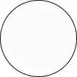

Les sites que vous pourriez aimer
Si vous avez aimé le site, vous aimerez peut-être :

Bosswingel Yan, Passion foot
Groison Benjamin, Héros oubliés
Haas Amélie, choc des cultures
Gurgey lucas , Le jeu de l'argent
Heid Rebecca, Always more
Perret jules, la vie d'un soldat
Gil Lucas, l'addiction une prison intérieur
Ridou Maxime, Avatar, un monde incroyable
Paul Martin, beyond the quest
Heim Nikolas, TheConnection
Cauchy Adrien, l'art et l'artiste
Waille Steven, NumeraProject